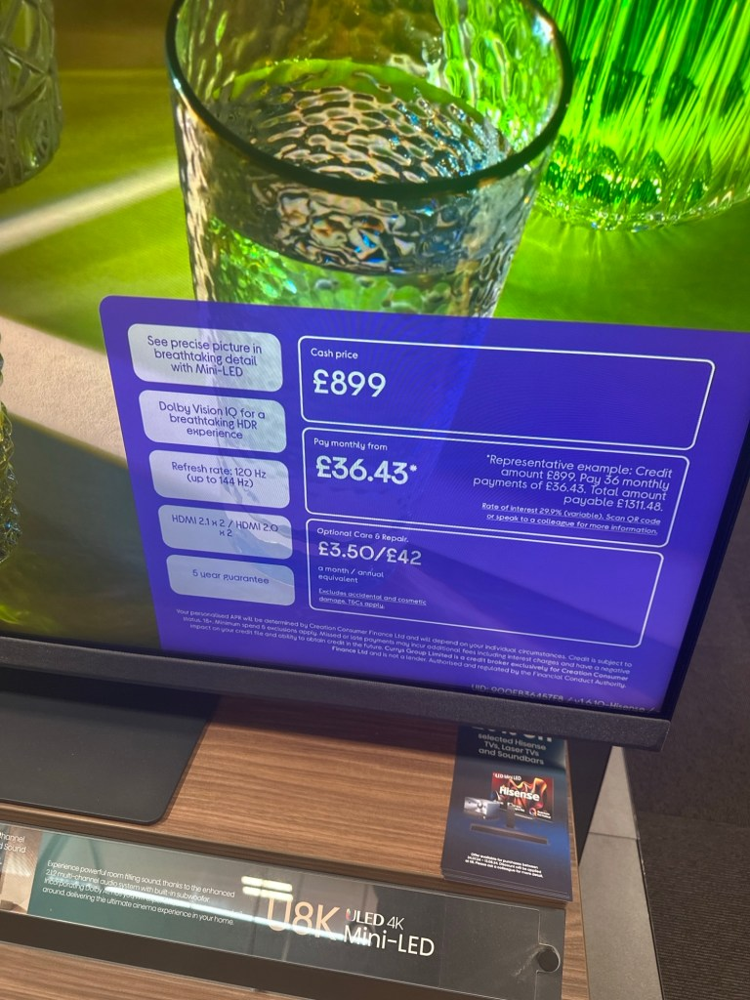

Televisions and monitors
serve different primary purposes and have distinct features tailored to their uses. Here's a breakdown of the main differences:
Purpose and Usage
-
Television: Designed for watching TV shows, movies, and other video content. Typically used in living rooms or entertainment areas.
-
Monitor: Designed for computing tasks, gaming, and professional work. Commonly used with desktop computers.
Screen Size and Resolution
-
Television: Generally larger, ranging from 32 inches to over 75 inches. Resolutions vary from HD (720p) to 4K (2160p) and beyond.
-
Monitor: Usually smaller, ranging from 21 inches to 32 inches, though larger sizes are available. Resolutions can go from Full HD (1080p) to 4K and sometimes higher, with higher pixel density.
Refresh Rate and Response Time
-
Television: Typically has a refresh rate of 60Hz, with some models supporting 120Hz or higher. Response times are usually slower, making them less suitable for fast-paced gaming.
-
Monitor: Often features higher refresh rates (60Hz to 240Hz) and faster response times (1ms to 5ms), making them ideal for gaming and precise tasks.
Connectivity
-
Television: Equipped with multiple HDMI ports, USB ports, and sometimes component/AV inputs. Often includes built-in streaming apps and smart features.
-
Monitor: Primarily features HDMI, DisplayPort, and sometimes USB-C connections. Generally lacks smart features but may have additional ports for peripherals.
Color Accuracy and Viewing Angles
-
Television: Color accuracy can vary widely, but higher-end models offer excellent color reproduction and wide viewing angles.
-
Monitor: Professional monitors are designed for color accuracy and consistency, crucial for tasks like photo and video editing.
Built-in Features
-
Television: Often includes built-in speakers, smart TV functionality (streaming apps, internet browsing), and a remote control.
-
Monitor: Usually lacks built-in speakers or has basic ones. No smart features, and settings are adjusted through buttons on the monitor itself.
Price
-
Television: Prices vary widely based on size, resolution, and features. Generally, larger TVs with higher resolutions and smart features are more expensive.
-
Monitor: Prices also vary, but high-refresh-rate, high-resolution monitors can be more expensive per inch compared to TVs due to specialized features.
Summary
-
TV: Best for general entertainment and media consumption, with large screens and built-in smart features.
-
Monitor: Best for computing, professional work, and gaming, with higher refresh rates, faster response times, and better color accuracy.
Choosing between a TV and a monitor depends on your specific needs and how you plan to use the screen.

Planned update
To compare the total size of a 65-inch monitor to the combined area of two 32-inch monitors plus one 14-inch monitor, we can calculate the screen area for each setup.
Calculating Screen Area
65-inch Monitor
-
Screen Diagonal: 65 inches
-
Aspect Ratio: Typically 16:9
-
Width and Height: We can use the aspect ratio and the diagonal to find the width (W) and height (H) using the Pythagorean theorem: [
W^2 + H^2 = 65^2
] With the aspect ratio 16:9: [
\frac{W}{H} = \frac{16}{9}
] Solving these equations: [
H = \frac{65}{\sqrt{(\frac{16}{9})^2 + 1}} \approx 31.89 \text{ inches}
]
[
W = \frac{16}{9} \times H \approx 56.65 \text{ inches}
] [
\text{Area} = W \times H \approx 56.65 \times 31.89 \approx 1806.85 \text{ square inches}
]
Two 32-inch Monitors
-
Screen Diagonal: 32 inches each
-
Aspect Ratio: Typically 16:9
-
Width and Height: [
W^2 + H^2 = 32^2
] With the aspect ratio 16:9: [
\frac{W}{H} = \frac{16}{9}
] Solving these equations: [
H = \frac{32}{\sqrt{(\frac{16}{9})^2 + 1}} \approx 15.69 \text{ inches}
]
[
W = \frac{16}{9} \times H \approx 27.86 \text{ inches}
] [
\text{Area of one 32-inch monitor} = W \times H \approx 27.86 \times 15.69 \approx 437.44 \text{ square inches}
] [
\text{Total area for two 32-inch monitors} = 2 \times 437.44 \approx 874.88 \text{ square inches}
]
One 14-inch Monitor
-
Screen Diagonal: 14 inches
-
Aspect Ratio: Typically 16:9
-
Width and Height: [
W^2 + H^2 = 14^2
] With the aspect ratio 16:9: [
\frac{W}{H} = \frac{16}{9}
] Solving these equations: [
H = \frac{14}{\sqrt{(\frac{16}{9})^2 + 1}} \approx 6.86 \text{ inches}
]
[
W = \frac{16}{9} \times H \approx 12.20 \text{ inches}
] [
\text{Area} = W \times H \approx 12.20 \times 6.86 \approx 83.77 \text{ square inches}
]
Total Area Comparison
-
65-inch Monitor: Approximately 1806.85 square inches
-
Two 32-inch Monitors plus One 14-inch Monitor: Approximately 874.88 + 83.77 = 958.65 square inches
Summary
-
65-inch Monitor: 1806.85 square inches
-
Two 32-inch Monitors plus One 14-inch Monitor: 958.65 square inches
The 65-inch monitor provides significantly more total screen area compared to the combined area of two 32-inch monitors plus one 14-inch monitor. However, the multi-monitor setup offers more flexibility and can be more advantageous for multitasking despite the smaller total area.
Imported from rifaterdemsahin.com · 2024